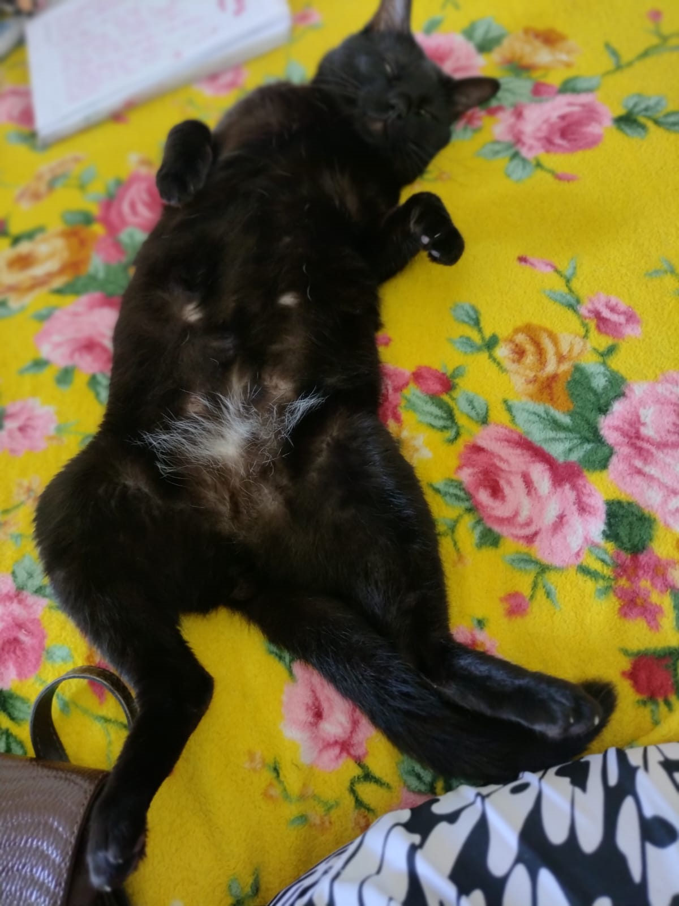
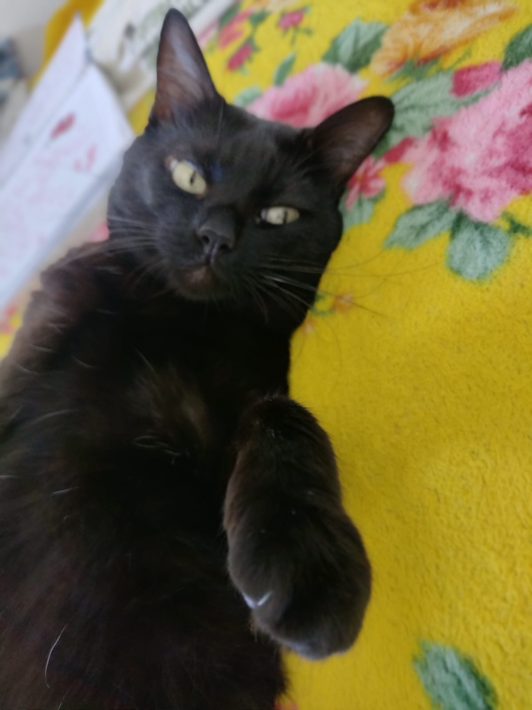
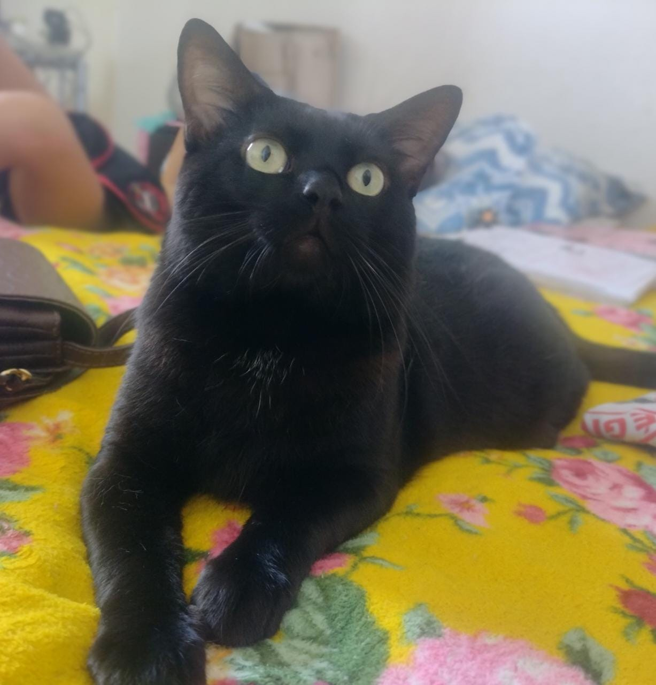

Tago Antunes, nasceu em Parnamirim-RN em 2008, mais conhecido como nigruinho Tiago escolheu Renata para ser sua mãe.
Nascido em Parnamirim-RN ano ano de 2008 Tiago logo conquistou o coração da Renata .
Ele foi adotado muito doente e debilitado, mas nada que amor e cuidado não resolvesse.
Desde bebê Tiago sempre foi muito quieto, amava comer sachê morninho e dormir embaixo dos lençois e com a cabeça no travesseiro.
Ele também ama um carinho na barriga, mas só de quem ele conheçe e confia (que por acaso são pouquissimas pessoas).
A Juventude de Tiago, já o levou a fazer várias viagens em 2018 mudou-se do bairro Boa esperança para Cajupiranga aonde descobriu areia, plantas a disposição e um quintal fresquinho para destressar e caçar lagartixas.
Tiago já viajou para Macaíba, aonde passou um carnaval no pé do galo (Residência de descanço dos seus Bisavós maternos Idê e Acionesio, entretando acabou ficando todos os dias trancados no quarto por medo de uma gata que ali vivia.
Também já passou um final de semana hopedado no chalé Spa da Alma de Pipa-RN, mas também não saiu do quarto por medo dos pavões.
Atualmente Tiago vive com a sua avó Alessandra, sua tia Rafaela, e seus primos Giovana, Maria e Matteo. uma vez que sua mãe Renata está em Portugal em busca de garantir sachê premium para sempre
Em Breve Tiago prentede ir para Portugal, para conheçer o velho mundo e provar das iguarias portuguesas com sachê de Sardinha, bacalhau e Salmão.
Enquanto essa viagem não aconte, ele segue exigindo carinhos diários de sua avó, além de fugir do Matteo, seu primo que quer o tempo inteiro desmonstrar seu intenso amor.
